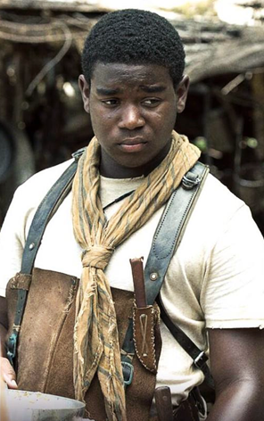

Présentation
Le Labyrinthe ou The Maze Runner est un film américain de science-fiction et d'aventure réalisé par Wes Ball. Le film est sorti en 2014. Il s'agit de l'adaptation du premier tome du roman L'Épreuve de James Dashner.
Synopsis
Quand Thomas reprend connaissance, il se retrouve coincé avec d'autres garçons dans un endroit appelé Le Labyrinthe. Il a perdu la mémoire, mais il fait d'étranges rêves à propos d'une organisation qui se fait appeler W.C.K.D. Pour en savoir plus, ils vont faire des recherches dans ce fameux labyrinthe et possiblement essayer d'en sortir.
Résumé
Un jeune homme se réveille dans une cage qui monte. Arrivé en haut, il se retrouve entourés d'autres gens dans un grand espace clos par quatre immenses murs avec un seul accès, le Labyrinthe. Alby se présente à lui comme étant le chef du groupe et lui explique qu'eux aussi sont arrivés amnésiques et que seul leurs prénoms finit par revenir au bout d'un jour ou deux. Surnommés eux mêmes "Blocards", une trentaine de garçons vivent dans le Bloc. Leur vie tourne principalement autour de la pratique de l'agriculture et de l'élevage. Chaque mois, la Boîte remonte un nouveau membre ainsi que des caisses qui fournissent au Bloc le matériel que les Blocards sont incapables de produire eux-mêmes. Ils ignorent pourquoi ils sont ici, et ne connaissent pas ceux qui les y ont envoyés. Newt, le second d'Alby, explique également que le groupe ne doit jamais aller de l'autre côté du mur. Chuck, un autre Blocard arrivé un mois auparavant, l'aide à s'installer mais ce dernier est curieux et veut voir ce qu'il y a derrière le mur par le passage ouvert. Il y voit deux Blocards, Ben et Minho revenir par l'entrée du Labyrinthe.
Le soir, les Blocards font la fête pour célébrer l'arrivée du nouveau. À l'écart, Newt lui explique que tous les matins, quand les portes s'ouvrent, les coureurs, franchissent l'accès et vont dans le Labyrinthe afin de trouver une sortie. Chaque nuit, la configuration du Labyrinthe change ce qui le rend d'autant plus dangereux qu'il est également parcouru par des "Griffeurs". Aucun Blocard n'a réussi à passer la nuit dans le Labyrinthe. Durant la fête, le nouveau est défié par Gally dans un jeu consistant à pousser l'autre hors d'un cercle. En chutant, son prénom lui revient : il s'appelle Thomas. La nuit, il rêve d'une organisation mystérieuse nommée WICKED ainsi que de l'expression « WICKED est bon ». Le lendemain, Thomas parle de s'évader mais Newt lui rétorque que bon nombre de choses ont déjà été tentées : escalader le mur, l'ascenseur de la boite, mais rien n'y fait : la seule solution, c'est le Labyrinthe.
La boite remonte une adolescente avec un message indiquant "c'est la dernière". Thomas reconnait la fille : c'est celle qui apparait dans ses rêves. Minho lui montre le plan du Labyrinthe, celui-ci est composé d'une section intérieure (couloir étroit et accès illimité) et de sections extérieures (obstacles larges et accès selon un cycle). À son réveil, la jeune fille se montre agressive envers les garçons et seul Thomas arrive à la calmer. Comme les autres, elle ne se souvient de quasiment rien si ce n'est de son prénom, Teresa. Plus tard, la porte qui jusqu'alors se fermait avant la nuit reste ouverte et d'autres portes s'ouvrent, laissant la voie à une attaque massive de Griffeurs.
Les fuyards se lancent une dernière fois dans le Labyrinthe, mais c'est sans compter sur les griffeurs qui les attaquent. Après une longue lutte, le groupe parvient à sortir du Labyrinthe et ils arrivent dans une salle de contrôle. Un enregistrement vidéo se lance avec le professeur Ava Paige, qui les informe qu'ils sont dans la société "WICKED", que le Soleil a calciné le monde, qu'un virus mortel appelé Braise a fait son apparition. Alors qu'ils s'apprêtent à sortir définitivement du Labyrinthe,Gally, pistolet en main, piqué par un griffeur, ouvre le feu sur Thomas. Minho tue Gally d'un coup de lance et une balle touche Chuck qui décède peu après. Alors que Thomas pleure son ami, des hommes armés pénètrent dans la salle de contrôle et emmènent le groupe dans un hélicoptère. Ava Paige annonce enfin que l'expérience que le groupe a subi va entrer en phase 2.
Casting
| Nom de l'acteur | Rôle dans le film |
|---|---|
| Dylan O'Brien | Thomas |
| Kaya Scodelario | Teresa |
| Thomas Brodie-Sangster | Newt |
| Will Poulter | Gally |
| Ki Hong Lee | Minho |
| Dexter Darden | Siggy |
| Aml Ameen | Alby |
| Blake Cooper | Chuck |
| Patricia Clarkson | Ava Paige |
Descriptif
Thomas
Thomas, auparavant Stephen, est un ancien Blocard du groupe A et un des créateurs du Labyrinthe, tout comme Teresa. Son nom lui a été donné par les créateurs en honneur à Thomas Edison.
Teresa
Teresa, auparavant Deedee, est une ancienne Blocarde du Groupe A et un des créateurs du Labyrinthe, tout comme Thomas. Son nom lui a été donné par les créateurs en honneur à Mère Teresa.
Newt

Newt est un ancien Blocard et co-leader du Groupe A avec Alby. Il est décrit comme étant beaucoup plus charismatique. Il est aussi un des seuls Blocards, avec Jackson, à ne pas être immunisé. Son nom lui a été donné par les Créateurs en honneur d'Isaac Newton.
Minho
Minho est un ancien Blocard et le chef des Coureurs. Il est donc endurant mais aussi loyal et sarcastique. Il part souvent au quart de tour et est donc trop spontané voire agressif, bien qu'il soit sans doute le Blocard qui fasse le plus preuve de sens de l'humour. Il est habile avec les armes et est capable d'utiliser diverses armes blanches (couteaux, lances ou même batte avec des barbelés). Par ailleurs, il semble aimer avoir le dernier mot. Son nom lui a été donné par les Créateurs en l'honneur d'un scientifique fictif.
Alby
Alby était un Blocard mais aussi le Chef du Groupe A pendant un peu moins d'un mois, avant d'être piqué par un Griffeur. Son nom lui a été donné par les créateurs en honneur à Albert Einstein.
Gally
Gally est un ancien Blocard, arrogant. Les souvenirs qui lui sont revenus suite à la Transformation l'ont poussé à se méfier de Thomas dès son arrivée et donc à devenir son ennemi sans même apprendre à le connaître. Il est le chef des bâtisseurs. Son nom lui a été donné par les Créateurs en l'honneur de Galilée.
Siggy
Siggy, à l'origine Toby, est un ancien Blocard ainsi que le Chef des Cuistots depuis un an, ce qui lui valu le surnom de Poêle-à-frire. Son vrai prénom est Toby. Son nom lui a été donné par les Créateurs en honneur à Sigmund Freud.
Chuck
Charles, plus connu sous le nom de Chuck, est un ancien Blocard plutôt petit et grassouillet qui fut le premier ami de Thomas dans le Bloc. Son nom lui a été donné par les Créateurs en honneur à Charles Darwin.
Ava Paige

La Chancelière Ava Paige apparaît dans chaque épilogue des trois tomes, qui se compose d'une note de celle-ci et devient un personnage plus important dans Le Remède Mortel.
WICKED
World In Catastrophe : Killzone Experiment Department (signifiant littéralement Monde Sinistré : Département Expérience de la Zone mortelle), généralement abrégé WICKED (qui signifie "méchant" en anglais) est une organisation créée dans le but de trouver un antidote à la Braise. Après les éruptions solaires, les gouvernements internationaux restants combinèrent leurs ressources pour former cette organisation. Afin de réaliser cette expérience, ils sélectionnèrent une centaine d'enfants entre 12 et 17 ans, pour la plupart immunisés contre la Braise. Ils leur firent passer plusieurs tests comme le Labyrinthe ou la Terre Brûlée qui incluaient des Epreuves conçues pour stimuler la Zone mortelle ou le cerveau dans le but d'enregistrer des modèles spécifiques. Ils avaient prévu d'utiliser ces modèles afin de découvrir ce qui rendait le cerveau de ces enfants capable de résister à la Braise et donc de créer un remède.